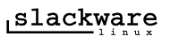

Home
Packages
Vars Documentation
Man Documentation
home tj-slackware

Slackware web Ressources
Linux Packages
Slack current CH mirror
Slack Z00
Tux Finder
Freshmeat
External Stuff
Reingegnerizzazione Slackware Packages ad uso interno
Last - (c)technojuice - jan 11